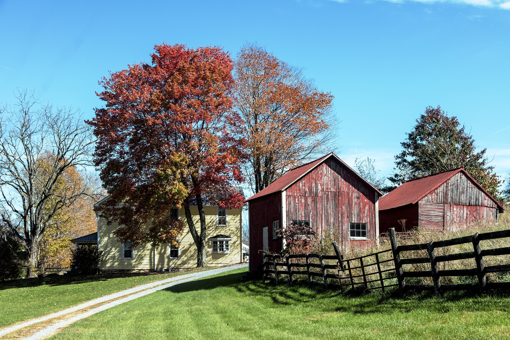
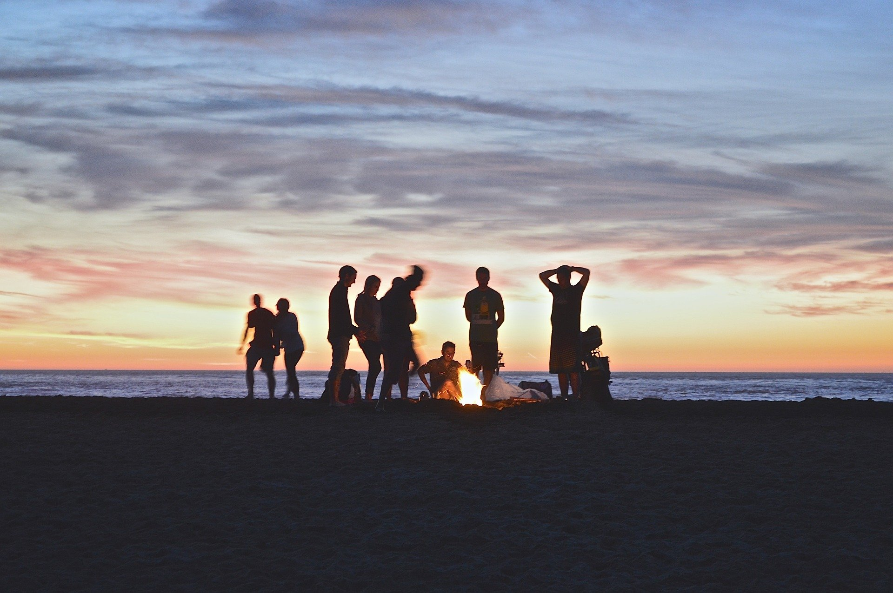

Växjö Djurfristad öppnades 1996 av Pernilla Pernillasson och Gert Gertsdotter för att de ville ge ett hem åt djur som folk inte tyckte hade ett värde längre. De började 1996 med att rädda slakt- och mjölkkor men det utökades sedan till höns, kaniner och de har även periodvis haft illrar. Idag är det en sprudlande förening med tiotalet volontärer som hjälps åt att hålla fristaden vid liv.
Vi har även försäljning av egen producerade varor, se butik samt sidorna bondgården och hönshuset för vidare information.



växjödjurfristad@email.se
Hittepågatan 23, Växjö 352 55
Må-To 9.00-16.00
Lö-Sö 10.00-15.00